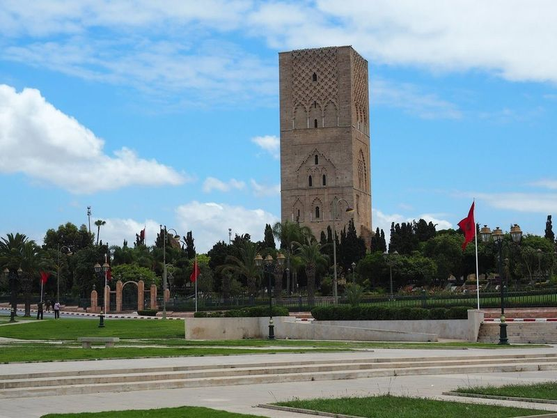
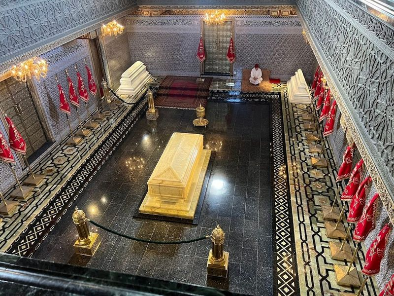
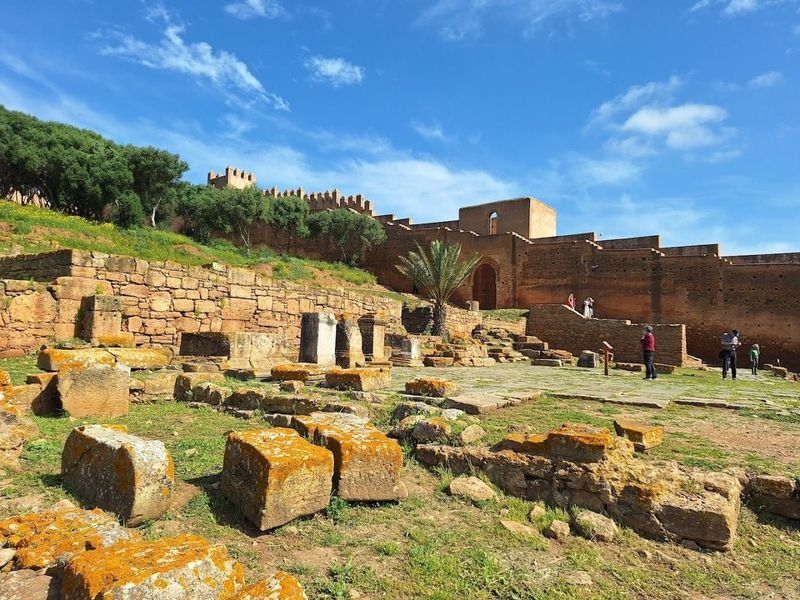
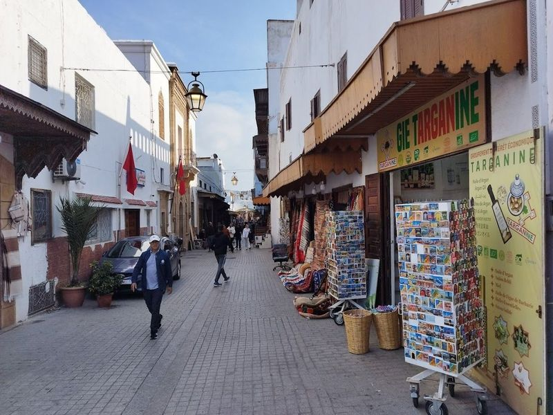
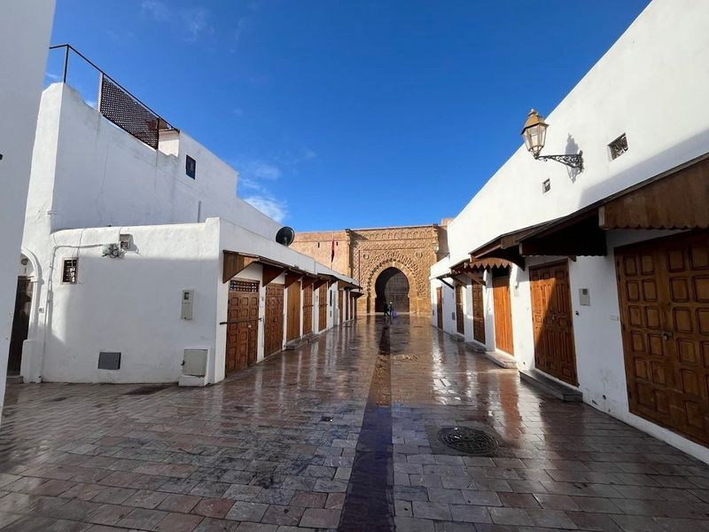
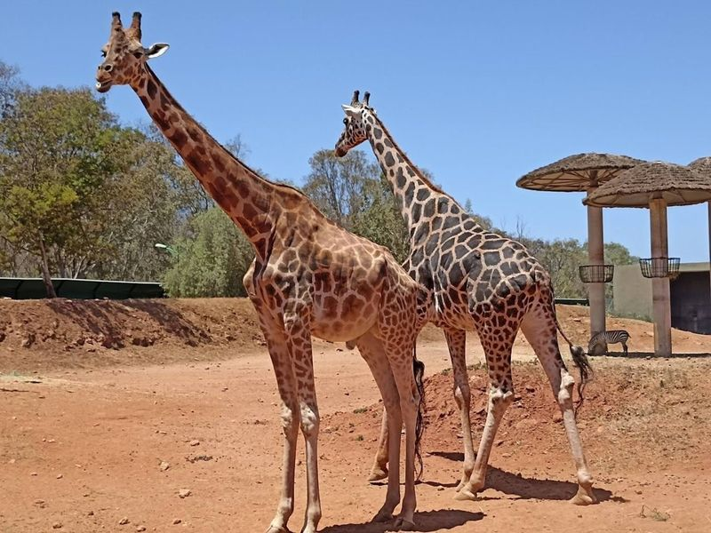
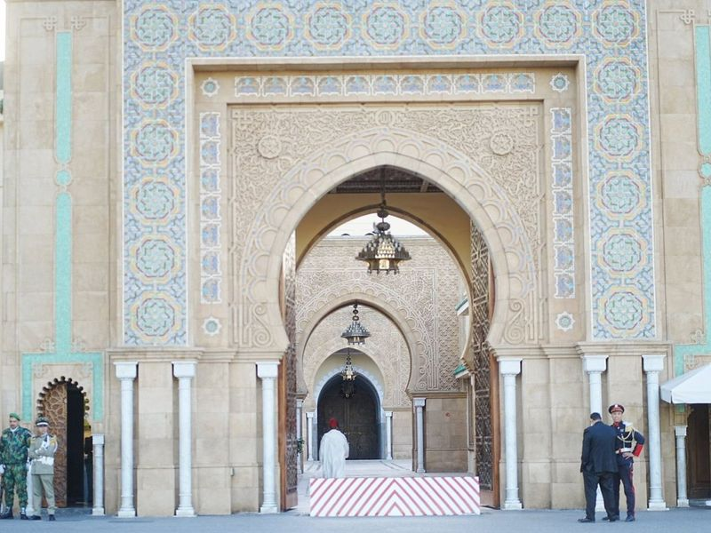
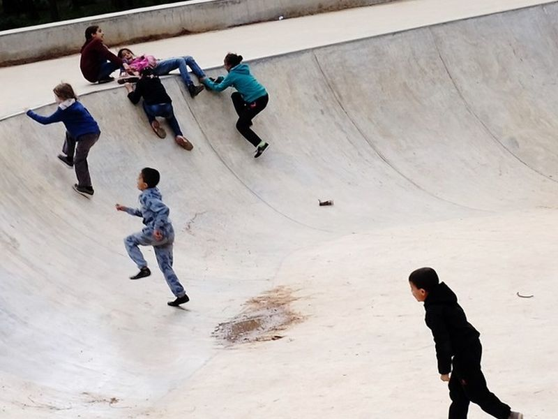
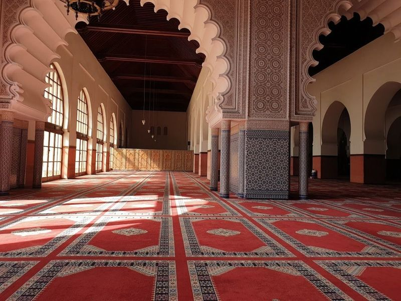
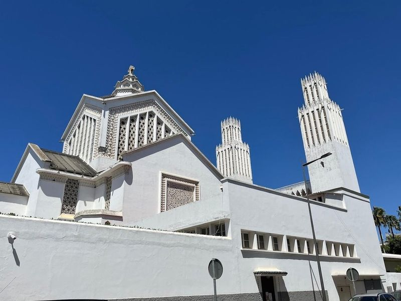

Explore Rabat
A Brief History
Rabat developed as a fortified ribat under the Almohads and became Morocco's administrative capital under French protectorate rule from 1912. The Kasbah of the Udayas, Hassan Tower, Chellah necropolis, and twentieth-century civic quarters record how Atlantic trade, Marinid patronage, and modern state planning shaped the kingdom's present-day government seat.
Attractions Map
Top Sights & Activities

Hassan Tower
Hassan Tower is a renowned 12th-century minaret in Rabat, Morocco. It was intended to be the world's largest minaret but remained unfinished after the death of its commissioner, Almohad emperor Yacoub al-Mansour. The red sandstone tower is adorned with hundreds of columns and stands opposite the mausoleum for King Mohammed V. The site also features white Moorish arches and intricate zellij patterns on its interior walls.

Mausoleum of Mohammed V
The Mausoleum of Mohammed V is a significant site in Morocco, featuring the final resting place of King Mohammed V and the tombs of King Hassan II and Prince Abdallah. The mausoleum showcases elegant Alaouite architecture with a striking green dome set against white marble.

Chellah Castle
Chellah is a historic site located on the grounds of an ancient citadel, featuring Roman ruins and royal tombstones. The area covers about 3.5 km2 and includes the ruins of a walled Roman/Arab city, a medieval citadel overlooking the estuary, and the Ville Nouvelle developed under French Protectorate government. The site offers a glimpse into history with its ancient Roman and medieval ruins surrounded by lush gardens.

Old Market
Rabat Old Market, located in the historic Rabat Medina, is a must-visit destination in Morocco. The market offers a diverse range of products that reflect the local culture. With its narrow streets and unique designs, Rabat's old town provides an authentic Moroccan experience. The fortified market is easily accessible and features various entrances along with convenient underground parking. Renovated recently, the market boasts a clean and modern look while maintaining its traditional charm.

Kasbah Oudaya
Kasbah des Oudayas is a historic citadel with striking blue walls that overlook the Atlantic. Its origins can be traced back to the Almohad Caliphate, showcasing centuries of history. The Andalusian Garden within the kasbah is a beautiful oasis filled with blooming plants, fruit trees, and palms, originally designed by the French in the 20th century.

Rabat Zoo
The National Zoo Rabat Morocco is a zoological park that houses around 130 different species of animals in simulated habitats such as mountains, deserts, savannas, and rainforests. Visitors can observe up to 140 various species of animals including hippopotamuses, elephants, lions, rhinoceroses, and giraffes. The zoo has been recently renovated to provide the animals with habitats that closely resemble their natural ecosystems.

Royal Palace
The Royal Palace of Rabat, constructed in 1864, stands as the official residence for Morocco's royal family and is a testament to the country's rich history. Visitors can start their journey at the Mausoleum of Mohammed V, which pays tribute to past kings before gazing upon the palace's architecture from outside. Although entry is restricted, its grandeur captivates all who pass by.

Urban Forest Ibn Sina "Hilton"
Urban Forest Ibn Sina "Hilton" forms part of the documented heritage landscape of Rabat, with municipal and regional listings describing its role in the historic centre. Urban Forest Ibn Sina "Hilton" forms part of the documented heritage landscape of Rabat, with municipal and regional listings describing its role in the historic centre.

Assounna Mosque
Nestled in the heart of Rabat, the Assounna Mosque stands as a testament to architectural elegance and historical significance. Constructed during the reign of Sultan Sidi Mohammed Ben Abdellah around 1785, this mosque features impressive dimensions and a strikingly simple design. Its prayer hall is spaciously divided into three expansive naves that align with the Qibla wall.

St. Peter's Cathedral
St. Peter's Cathedral is an art deco Roman Catholic church located in Rabat, Morocco. It serves as the seat of the Archdiocese of Rabat and is known for its unique architecture and glass works. The choir performs exceptionally well during masses held in French, giving a sense of community to all attendees. Despite being situated in a predominantly Muslim country, the cathedral attracts visitors due to its beauty and proximity to restaurants and cafes near the tram stop.